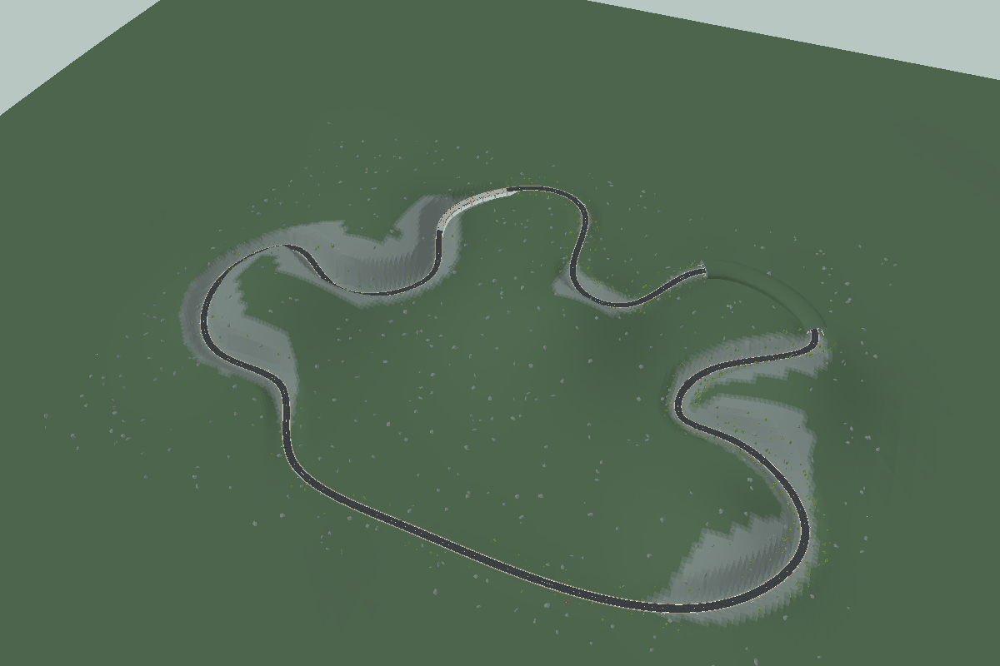
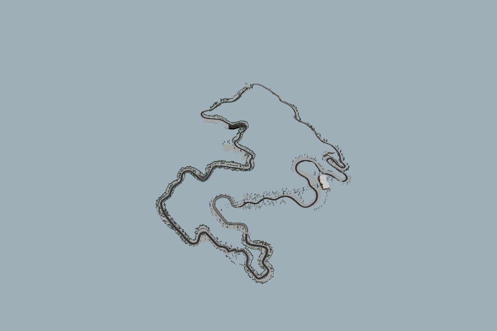

DR1FT / PRE-ALPHA.18 / 11 NOV 2026
Carreteras con recorrido.
20 rutas, cuatro climas, árboles originales y un bonus visual de Summit. Los cinco Circuitos 2.0 y los modos anteriores siguen disponibles.
230pruebas de núcleo aprobadas
20 / 20vueltas individuales sin salidas ni impactos
4 climascarreras con cinco autos comprobadas
Vista aérea del piloto

Render de software de la geometría del juego. Las 20 escenas se comprobaron por rayos; el informe incluye los límites de las pruebas.
Summit · bonus visual

El GLB y su atlas original están incluidos. Abrir visor interactivo. Esta vista no es un circuito con conducción ni una certificación de identidad visual del 100 % con NFS III.
Las 20 rutas
| # | Carretera | Clima | Longitud | Desnivel |
|---|
| 01 | Valle de los Robles | Despejado | 8.2 km | 141 m |
| 02 | Costa Quebrada | Despejado | 9.1 km | 109 m |
| 03 | Paso del Cernícalo | Despejado | 9.8 km | 197 m |
| 04 | Lagos Gemelos | Despejado | 8.6 km | 103 m |
| 05 | Sierra del Viento | Despejado | 10.5 km | 175 m |
| 06 | Bosque de la Lluvia | Lluvia | 8.4 km | 126 m |
| 07 | Quebrada del Trueno | Lluvia | 9.6 km | 186 m |
| 08 | Marisma del Sur | Lluvia | 7.9 km | 87 m |
| 09 | Ruta de los Helechos | Lluvia | 9.2 km | 135 m |
| 10 | Bahía Tormenta | Lluvia | 10.1 km | 159 m |
| 11 | Pinar de la Bruma | Bruma | 8.1 km | 110 m |
| 12 | Embalse Silencioso | Bruma | 9.3 km | 130 m |
| 13 | Miradores Ocultos | Bruma | 9.7 km | 155 m |
| 14 | Garganta del Eco | Bruma | 8.9 km | 168 m |
| 15 | Campos del Amanecer | Bruma | 10.7 km | 112 m |
| 16 | Paso de la Nevada | Nieve | 8.8 km | 182 m |
| 17 | Lago de Cristal | Nieve | 9.6 km | 160 m |
| 18 | Cumbres del Sur | Nieve | 11.0 km | 206 m |
| 19 | Bosque de Escarcha | Nieve | 8.3 km | 133 m |
| 20 | Collado del Invierno | Nieve | 10.2 km | 203 m |
Validación pendiente
Chromium no pudo arrancar por restricciones del entorno. Quedan pendientes las diez pruebas de navegador, FPS con GPU, controles en teléfono físico y conducción manual. Las vueltas se realizaron con entradas automatizadas; la prueba con rivales cubre una carretera por clima.
Informe completo · Resultados de núcleo · Resultados con tráfico · Abrir DriftGame